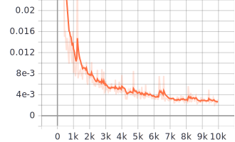
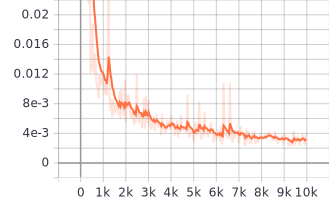
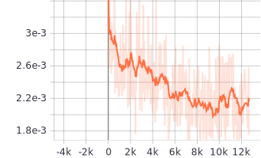
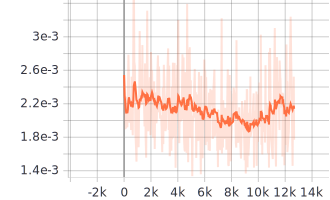
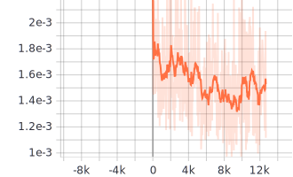
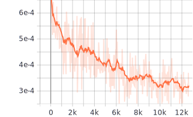
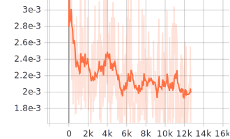

R20-B : Result SEMI SUPERVISED 8000 samples
Homepage
Plots of losses during training
Details :
Trained with 8000 training samples (2500 with supervised loss, 5500 with unsupervised loss). For each face : 15 sampled envmaps with random rotation around Z axis.
Testing results
Training results
1st phase : Fully supervised training (2500 samples) :
Training loss supervised (L2 all intrinsics) : LA
LA 
Testing loss
Testing loss 
2nd phase : Semi supervised training (5500 unsupervised samples) :
Total training loss : λA LA + λB LB
λA LA + λB LB 
Testing loss
Testing loss 
Training loss supervised (L2 all intrinsics) : LA
LA 
Training loss unsupervised (L2 only appearance) : LB
LB 
Supervised loss (all intrinsics) on unsupervised training set : LC
LC 